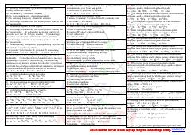

M7Yadro reaksiyalari va atom tuzilishiga oid testlar to'plami.
Ushbu material yadro reaksiyalari, izotoplar, izobarlar va izotonlar mavzusiga oid test savollari va masalalarni o'z ichiga oladi. Unda atom yadrosining tuzilishi, radioaktiv yemirilish va yadroviy o'zgarishlar bo'yicha amaliy topshiriqlar keltirilgan.